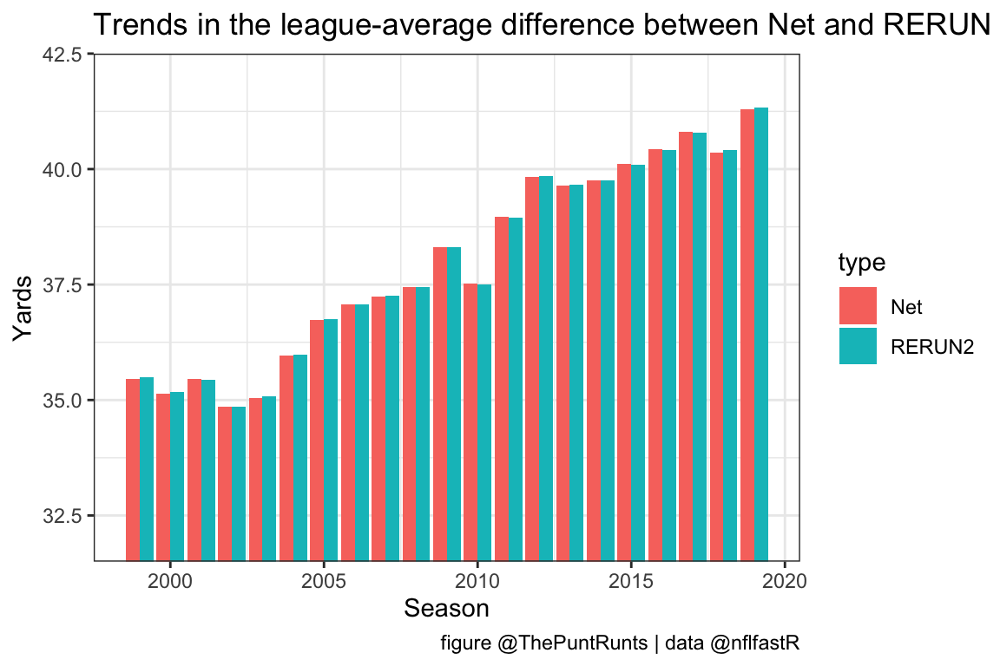
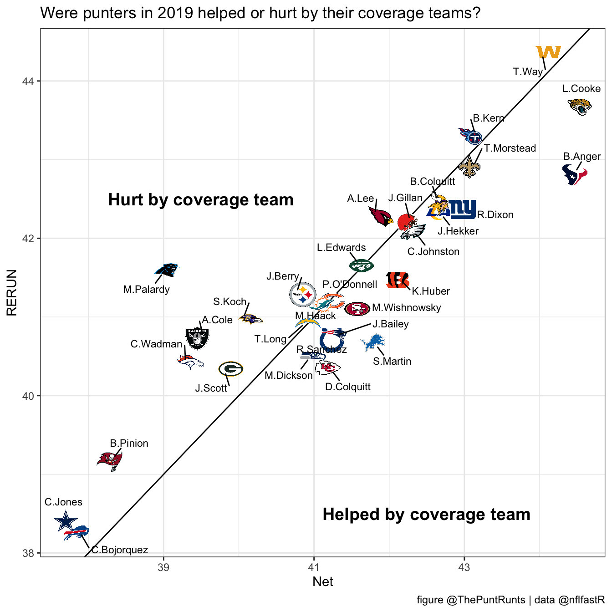

Table of Contents
RERUN: Return-edited real unbiased net
Anyone who follows our twitter (which, you know, please do!) might have seen our thread a while back about the responsibility of punters for big returns:
Every time a dynamic returner goes off for 20+ yds, we think, was that the punter's fault? And even in less extreme cases, are we swaying our evaluations of punters based on the quality of the coverage team in front of them? We'll spend this thread musing on that question
— Puntalytics (@ThePuntRunts) March 5, 2020
We’ll spend this article revisiting this topic in a little more detail.
Oh also, we made an R package for puntalytics
We’ve been working on puntr, which contains some simple tools for our typical puntalytics. We’ll use puntr here to import and clean our data; we could also use puntr to spit all our stats, but that would defeat the purpose of an article walking through this all!
# install.packages("devtools")
devtools::install_github("Puntalytics/puntr")
library(tidyverse)
punts_raw <- puntr::import_punts(1999:2019)
punts <- punts_raw %>% puntr::trust_the_process()The puntr::import_punts() function does exactly what it sounds like; it grabs the data from our github here. The data is just the nflfastR play-by-play, but already filtered down to only punt plays, which makes for a much smaller and more manageable data frame.
We’ve wrapped all the standard data cleaning steps into puntr::trust_the_process(). Regretfully, this is a little bit black-box-y, but here are the most important things it does:
- returns only the columns relevant to puntalytics; custom column selection can be achieved via
puntr::punt_trim(), and then using thetrim = FALSEflag inpuntr::trust_the_process()
- creates a
NetYardscolumn, which is surprisingly not in the defaultnflfastRdata frame
- adjusts touchbacks to treat them as punts to the 20, rather than punts to the 0; the latter is the default, but is silly!
- renames
kick_distancetoGrossYards, for our own sanity and prettiness on axis labels
- adds
team_logo_espn,team_color, andteam_color2usingnflfastR
Two big assumptions
Let’s make two big-but-reasonable-ish assumptions, and then carry out the ramifications
- A punter is 100 % responsible for whether a punt is returned (vs. being downed, out-of-bounds, fair caught, or a touchback)
- A punter is 0 % responsible for the length of that return, once the returner chooses to return
For starters, let’s make a note of those returned punts
punts <- punts %>%
mutate(returned = pmap_dbl(list(punt_out_of_bounds==0 &
punt_downed==0 &
punt_fair_catch==0 &
touchback==0,
1, 0),
if_else))And now, let’s make new columns for GrossYards and return_yards that only contain values when returned == 1, and are NA everywhere else:
punts <- punts %>%
mutate(GrossYards_r = pmap_dbl(list(returned==1,
GrossYards, NA_real_),
if_else)) %>%
mutate(return_yards_r = pmap_dbl(list(returned==1,
return_yards, NA_real_),
if_else))What’s the relationship between GrossYards_r and return_yards_r? Let’s plot that, and throw in a trend line while we’re at it.
library(ggplot2)
ggplot(data=punts, mapping=aes(GrossYards_r, return_yards_r)) +
geom_point(alpha = 0.06) +
geom_smooth(method="loess", span=0.65) +
labs(title = "How far punts of various lengths are typically returned",
subtitle = "(when they're returned at all!)",
y="Return Yards", x="Gross Yards", caption="figure @ThePuntRunts | data @nflfastR") +
theme_bw()
The crux of this analysis is moving every point on this graph up or down to the trendline!
Assigning a RERUN value to punts
First, let’s use the same smoothing as in geom_smooth() above to create a new column return_smooth:
punts <- punts %>%
mutate(return_smooth = loess(formula = return_yards_r ~ GrossYards_r,
data = punts,
span=0.65,
na.action = na.exclude) %>% predict)(That na.action = na.exclude flag is a life-saver.)
Now, we’re ready to use return_smooth to create a new version of net! This is what we call RERUN: return-edited real unbiased net. Note that for non-returned punts, RERUN is just equal to GrossYards.
punts <- punts %>%
mutate(RERUN = pmap_dbl(list(returned==1,
GrossYards_r - return_smooth, GrossYards),
if_else))Sanity checks
As a first sanity check, nothing that we did should adjust the overall league average numbers in the data set. Is this true?
punts %>% summarise(Net = mean(NetYards),
RERUN = mean(RERUN))
# A tibble: 1 x 2
Net RERUN
<dbl> <dbl>
1 37.9 37.9Awesome! But, there’s one more detail we have to be sure to look at:
Era adjustment
Let’s plot Net and RERUN each season in the dataset (1999 - 2019). Remember that RERUN buoys punters with bad coverage; this means that RERUN > Net indicates bad coverage, and Net > RERUN indicates good coverage.
trends <- punts %>% group_by(season) %>%
summarise(Net = mean(NetYards),
RERUN = mean(RERUN)) %>%
gather(Net, RERUN, key="type", value="distance") # gather is a tidyr function and it rocks
ggplot(data = trends, mapping = aes(x = season, y = distance, fill = type)) +
geom_bar(position = "dodge", stat="identity") +
coord_cartesian(ylim=c(32,42)) +
theme_bw() +
labs(title = "Trends in the league-average difference between Net and RERUN",
y="Yards", x="Season", caption="figure @ThePuntRunts | data @nflfastR")
We notice two trends here. One is that in general, Net has increased over time, and quite a bit! This is actually a pretty persistent problem in puntalytics; we’ve dealt with it in various places, including in our EPA metric, but we won’t address it here. (Side note, stay tuned for an article about our EPA metric, hopefully soon!)
More pressing to our current analysis is that by the rough definitions we just set, coverage has also been improving consistently. We’ll account for that by adjusting our “average” (or “expected”) return length based on which season that return happened! Thankfully, the purrr package, along with tidyr::nest(), make this pretty straightforward:
# the same model as before, but now expressed as a function:
rerun_model <- function(input) {
loess(formula = return_yards_r ~ GrossYards_r,
data = input,
span=0.65,
na.action = na.exclude)
}
punts <- punts %>%
group_by(season) %>%
nest() %>%
mutate(model = map(data, rerun_model)) %>%
mutate(return_smooth2 = map(model, predict)) %>%
unnest(c(data, return_smooth2)) %>%
mutate(RERUN2 = pmap_dbl(list(returned==1,
GrossYards_r - return_smooth2, GrossYards),
if_else)) %>%
ungroup()Now if we repeat the same plot as above, we see that we’ve successfully era-adjusted our treatment of coverage (while leaving the trend in net un-adjusted).

Top punters by this new metric
Hooray! We derived a new metric for punters. Might as well check out the all-time (nflfastR-era) leader board! (As mentioned above, this will be biased towards recent punters.)
## Custom mode function, because R somehow doesn't have one built-in??
getmode_local <- function(v) {
uniqv <- unique(v)
uniqv[which.max(tabulate(match(v, uniqv)))]
}
mini <- punts %>%
group_by(punter_player_name, season) %>%
filter(n() > 32) %>%
summarise(RERUN = mean(RERUN2),
Gross = mean(GrossYards),
Net = mean(NetYards),
NumPunts= n(),
team_logo_espn = getmode_local(team_logo_espn),
team_color = getmode_local(team_color),
team_color2 = getmode_local(team_color2)) %>%
rename(Name = punter_player_name) %>%
arrange(desc(RERUN))
mini %>%
mutate(across(is.numeric, round, 1)) %>%
select(Name, season, RERUN, Net, Gross, NumPunts) %>%
rmarkdown::paged_table()In general, RERUN isn’t that different from regular-old net (and we still get a who’s-who of top punters). When is it the most different? Well, if a punter’s coverage team consistently allows larger-than-average returns, a punter’s net would suffer, but their RERUN wouldn’t. RERUN should be stable even in the face of a poor coverage team.
In 2019, which punters were helped or hurt the most by their coverage teams?
library(ggimage)
library(ggrepel)
mini19 <- mini %>%
filter(season==2019)
ggplot(mini19, mapping=aes(Net, RERUN, label = Name)) +
geom_abline() +
geom_image(aes(image = team_logo_espn)) +
geom_text_repel(size=3, point.padding = 0.6, force=1.25) +
annotate("text", x=42.5, y=38.5, label="Helped by coverage team", size=5, fontface = "bold") +
annotate("text", x=39.5, y=42.5, label="Hurt by coverage team", size=5, fontface = "bold") +
labs(title = "Were punters in 2019 helped or hurt by their coverage teams?",
caption="figure @ThePuntRunts | data @nflfastR") +
theme_bw()
That’s all we’ve got for now - thanks so much for reading! If you liked what you saw, be sure to follow us on twitter for more analysis like this (including our ongoing project of developing an EPA metric for punters) plus punting highlights throughout the season.